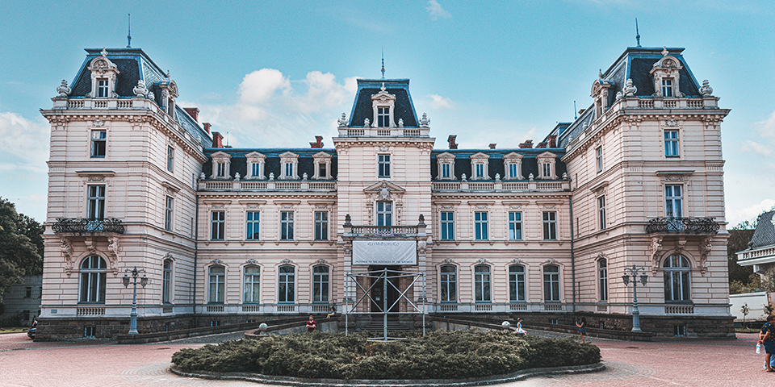
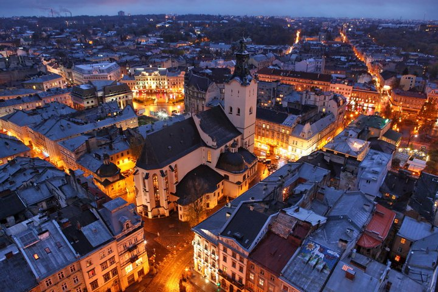

Палац Потоцьких
 Цей величний палац було зведено на замовлення відомого військового й політичного діяча Речі Посполитої, одного з найбагатших магнатів свого часу Юзефа Потоцького. Він був спроектований французьким архітектором де Верни, збудований під керівництвом поляка Юліуша Цибульського і є чудовим свідченням європейського класицизму. Масштаб споруди цілком відповідає статусу володаря: загальна площа будови – 3100 метри. Нині в одному з залів палацу реєструють шлюби, а в інших можна насолодитися живописом і скульптурою авторства відомих майстрів. Ціни на відвідування варіюються від 15 гривень – для дітей до 300 гривень – для групи туристів з екскурсією іноземною мовою. Звичайний дорослий квиток коштує 70 грн.
Ратуша
 Ратуша – це чудове місце для того, щоб оглянути центральну частину міста з висоти. Жоден турист не зможе оминути її поглядом, адже Львівська ратуша розташована на площі Ринок – в епіцентрі туристичного життя. Ратуша – найвища в Україні. Її висота становить 65 метрів, тому з неї добре видно ледь не усе місто. Обов'язково завітайте сюди, щоб насолодитися красивими краєвидами.
1795 року у Львові було відкрито перший в Україні професійний театр. 1842 року відкрито Театр Скарбека, тоді — третій за розмірами в Європі; 1900 року з'явилася Львівська опера — один із найгарніших театрів країни, зображений на двадцятигривневій купюрі. У місті діє 8 професійних театрів: опери та балету, драматичний імені Марії Заньковецької, драматичний імені Леся Курбаса, драматичний імені Лесі Українки, духовний «Воскресіння», естрадних мініатюр «І люди, і ляльки», для дітей та юнацтва та ляльковий, 6 театрів-студій та цирк. Місто є значним осередком театрального життя: щороку тут проходять два театральні фестивалі: «Золотий лев», найбільший театральний фестиваль країни, та «Драбина», фестиваль молодого аматорського театру. Щороку в жовтні у місті проходить театралізований карнавал. На великі свята проводять вуличні вистави на ходулях та вогняні шоу.
Для відвідувачів у місті відкриті двері понад 40 музеїв. Серед них: Львівський історичний музей, другий за розмірами історичний музей України; Національний музей, одна з найвизначніших в Україні скарбниць українського мистецтва, заснована митрополитом Шептицьким; Львівська галерея мистецтв, один з найбагатших музеїв України, у минулому очолюваний відомим мистецтвознавцем Борисом Возницьким; Етнографічний музей, єдиний такого типу в Україні; Національний меморіал «Тюрма на Лонцького», перша в Україні в'язниця-музей.
З давніх-давен Львів був значним літературно-книговидавничим центром регіону. З містом пов'язані імена Івана Франка, Богдана-Ігоря Антонича, Марії Конопницької, Єжи Яницького, Олександри Мариніної, Ванди Василевської, Леопольда фон Захер-Мазоха, Бруно Шульца, Станіслава Лема, Станіслава Єжи Леца, Тадеуша Ріттнера, Надії Мандельштам, Шолом-Алехема, Оноре де Бальзака, «Руської Трійці» «Дванадцятки» та інших.